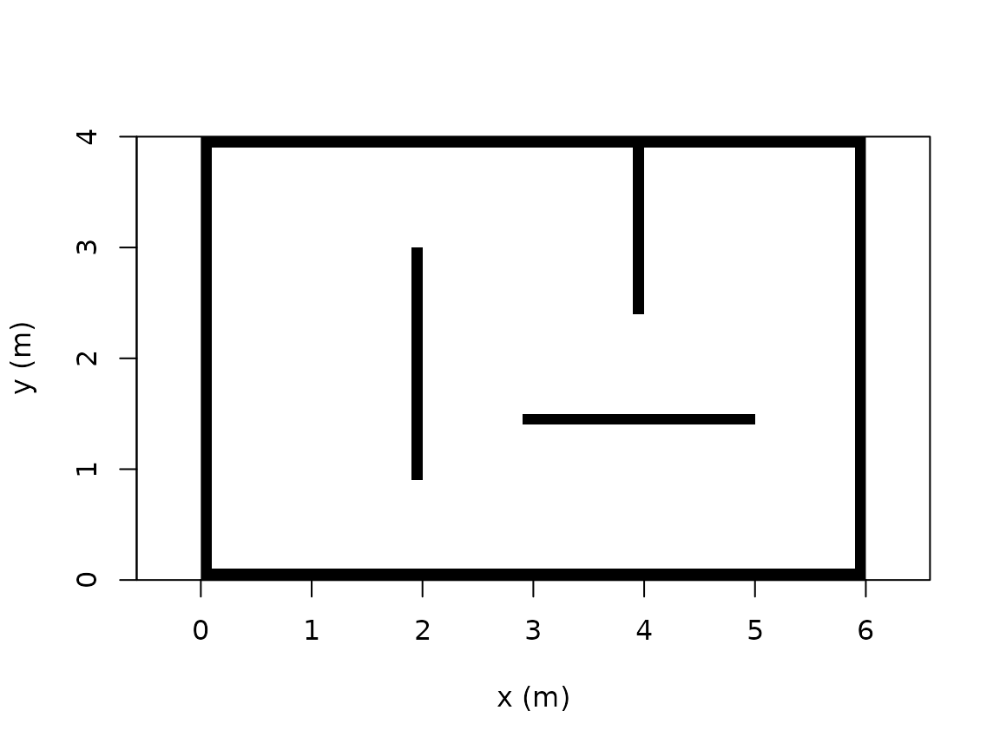
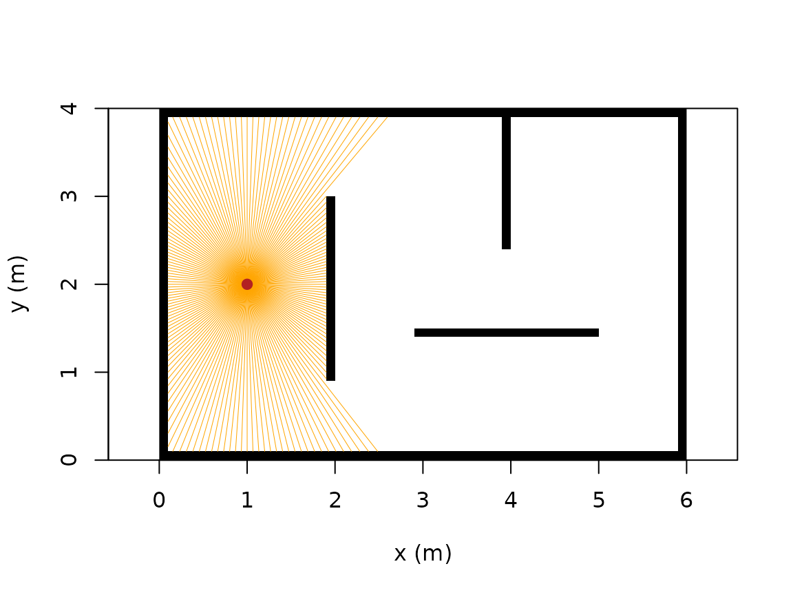
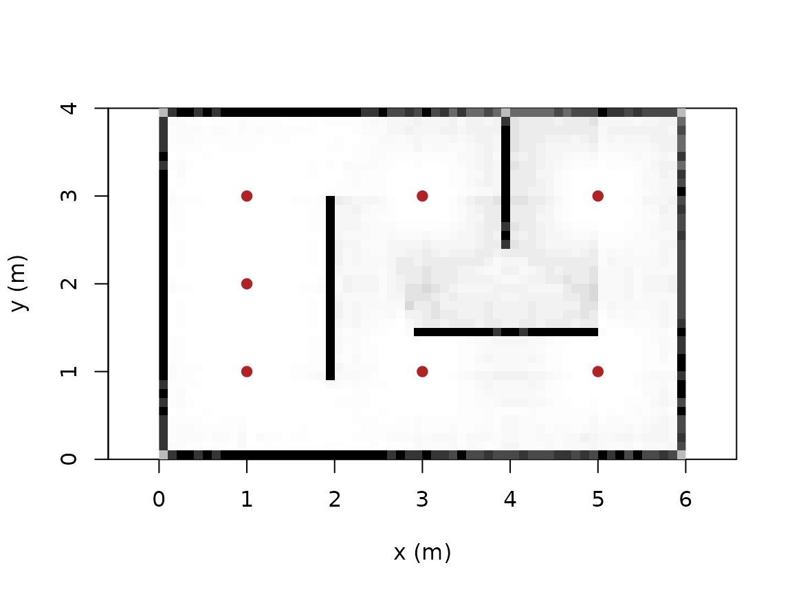
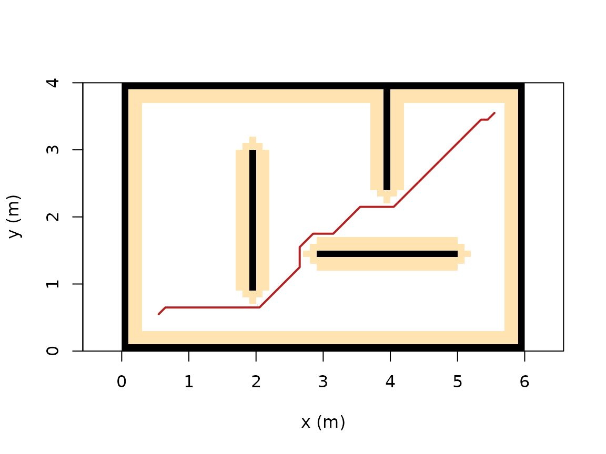
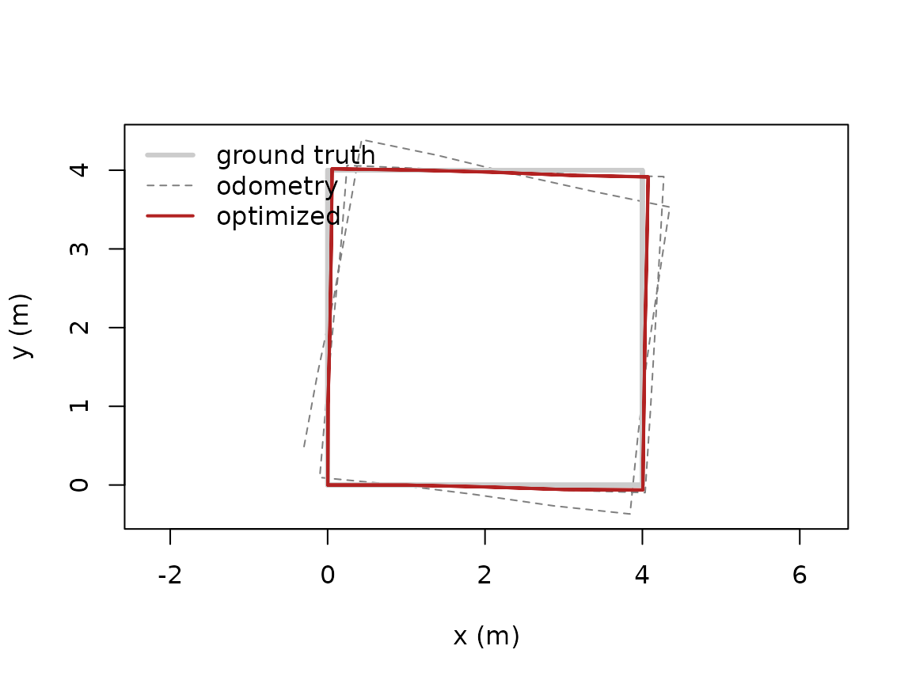
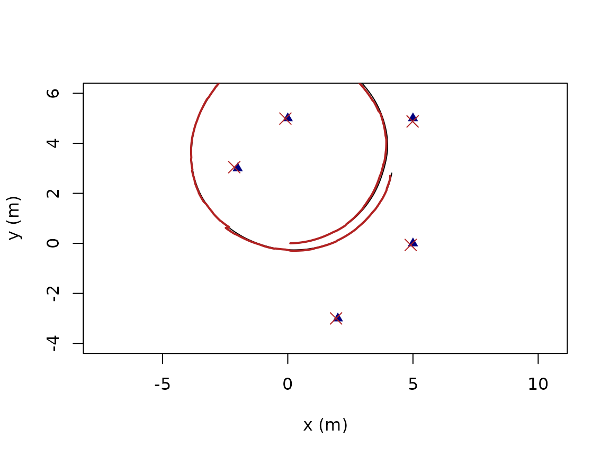

Occupancy grids, grid planning and pose graph SLAM
Source:vignettes/mapping-slam.Rmd
mapping-slam.RmdOccupancy grids
An occupancy grid stores, for each cell, the log-odds \ell = \log\frac{p}{1 - p} that the cell is
occupied. Independent observations add in log-odds, so updates are cheap
and order independent. Cell [i, j] covers row
i in y and column
j in x.
occ <- matrix(FALSE, 40, 60)
occ[c(1, 40), ] <- TRUE
occ[, c(1, 60)] <- TRUE
occ[10:30, 20] <- TRUE
occ[15, 30:50] <- TRUE
occ[25:40, 40] <- TRUE
world <- robot_occupancy_grid(c(0, 6), c(0, 4), resolution = 0.1, occupied = occ)
world
#> <robot_occupancy_grid> 40 by 60 cells of 0.1 m covering [0, 6] x [0, 4]
plot(world)
Coordinate conversion:
grid_world_to_cell(world, rbind(c(0.05, 0.05), c(2.55, 1.05), c(9, 9)))
#> row col
#> [1,] 1 1
#> [2,] 11 26
#> [3,] NA NA
grid_cell_to_world(world, cbind(11, 26))
#> x y
#> [1,] 2.55 1.05Simulated range scans
grid_raycast() walks each beam through the grid with the
exact traversal of Amanatides and Woo (1987) and returns the distance to
the first occupied cell boundary, or max_range.
pose <- c(1, 2, 0)
angles <- seq(-pi, pi, length.out = 181)[-181]
ranges <- grid_raycast(world, pose, angles, max_range = 4)
plot(world)
hits <- cbind(pose[1] + ranges * cos(angles), pose[2] + ranges * sin(angles))
segments(pose[1], pose[2], hits[, 1], hits[, 2], col = "orange", lwd = 0.5)
points(pose[1], pose[2], pch = 19, col = "firebrick")
Mapping with known poses
grid_update_scan() applies the inverse sensor model:
cells a beam passes through become more likely free, the cell where it
ends more likely occupied, and beams at max_range only
clear space. Log-odds are clamped so the map can still change later.
map <- robot_occupancy_grid(c(0, 6), c(0, 4), resolution = 0.1)
route <- rbind(c(1, 2, 0), c(1, 1, 0), c(3, 1, 0), c(5, 1, pi / 2), c(5, 3, pi),
c(3, 3, pi), c(1, 3, -pi / 2))
for (i in seq_len(nrow(route))) {
z <- grid_raycast(world, route[i, ], angles, max_range = 4)
map <- grid_update_scan(map, route[i, ], angles, z, max_range = 4)
}
plot(map)
points(route[, 1:2], pch = 19, col = "firebrick")
mean(grid_occupied(map) == occ)
#> [1] 0.9979167Grid planning with A*
grid_astar() searches the 8-connected grid with
Euclidean costs and an admissible Euclidean heuristic, so the result is
a shortest grid path. Diagonal moves may not cut obstacle corners. To
plan for a disc-shaped robot, inflate obstacles by its radius first.
inflated <- grid_inflate(world, radius = 0.2)
path <- grid_astar(world, c(0.5, 0.5), c(5.5, 3.5), occupied = inflated)
nrow(path)
#> [1] 56
plot(world)
image(seq(0.05, 5.95, 0.1), seq(0.05, 3.95, 0.1), t(inflated & !occ),
col = c(NA, grDevices::adjustcolor("orange", 0.3)), add = TRUE)
lines(path, col = "firebrick", lwd = 2)
When the goal is unreachable, grid_astar() returns
NULL.
Pose graph SLAM
A pose graph has one node per robot pose and one edge per relative pose measurement z_{ij} (pose of node j in the frame of node i) with information matrix \Omega_{ij}. Odometry adds edges between consecutive nodes; loop closures add edges between distant ones. Optimization solves
\min_{x_1, \ldots, x_n} \sum_{(i, j)} e_{ij}^\top \Omega_{ij} e_{ij}, \qquad e_{ij} = \begin{pmatrix} R_z^\top\left(R_i^\top (t_j - t_i) - t_z\right) \\ \operatorname{wrap}(\theta_j - \theta_i - \theta_z) \end{pmatrix},
with Gauss-Newton steps, Levenberg-Marquardt damping, analytic Jacobians and a sparse normal-equation solve. The first node is fixed to remove the gauge freedom.
# A robot drives around a square twice; odometry drifts in heading.
set.seed(3)
steps <- rep(c(rep(c(1, 0, 0), 3), c(1, 0, pi / 2)), 8)
steps <- matrix(steps, ncol = 3, byrow = TRUE)
truth <- matrix(0, nrow(steps) + 1, 3)
odom <- truth
compose <- function(x, z) {
c(x[1] + cos(x[3]) * z[1] - sin(x[3]) * z[2],
x[2] + sin(x[3]) * z[1] + cos(x[3]) * z[2], wrap_angle(x[3] + z[3]))
}
noisy <- steps
noisy[, 3] <- noisy[, 3] + rnorm(nrow(steps), 0, 0.03)
noisy[, 1] <- noisy[, 1] + rnorm(nrow(steps), 0, 0.02)
for (k in seq_len(nrow(steps))) {
truth[k + 1, ] <- compose(truth[k, ], steps[k, ])
odom[k + 1, ] <- compose(odom[k, ], noisy[k, ])
}
g <- robot_pose_graph(odom)
for (k in seq_len(nrow(steps))) {
g <- pose_graph_add_edge(g, k, k + 1, noisy[k, ], diag(c(100, 100, 400)))
}
# Loop closures: the robot recognizes places it visited one lap earlier.
for (k in 1:16) {
g <- pose_graph_add_edge(g, k, k + 16, c(0, 0, 0), diag(c(400, 400, 1000)))
}
res <- pose_graph_optimize(g)
res$converged
#> [1] TRUE
res$iterations
#> [1] 5
signif(res$cost, 3)
#> [1] 763.00 6.08 4.64 4.64 4.64 4.64
plot(odom[, 1:2], type = "l", col = "grey50", lty = 2, asp = 1,
xlab = "x (m)", ylab = "y (m)")
lines(truth[, 1:2], lwd = 3, col = "grey80")
lines(res$graph$nodes[, 1:2], col = "firebrick", lwd = 2)
legend("topleft", c("ground truth", "odometry", "optimized"),
col = c("grey80", "grey50", "firebrick"), lty = c(1, 2, 1), lwd = c(3, 1, 2), bty = "n")
The plot method draws the graph, with loop closures dashed:
plot(res$graph)
SE(3) pose graphs
Give robot_pose_graph() a list of SE(3) poses instead of
a matrix and the same functions optimize a 3D graph. Edges are relative
robot_pose measurements with 6 by 6 information matrices
(translation first), the residual is e_{ij} =
\log(Z_{ij}^{-1} X_i^{-1} X_j), and nodes are updated on the
manifold as X \exp(\delta).
set.seed(4)
step <- se3_exp(c(1, 0, 0.1, 0, 0.15, 2 * pi / 12))
truth3 <- Reduce(function(X, k) X %*% step, 1:24, accumulate = TRUE, init = diag(4))
noisy3 <- lapply(1:24, function(k) step %*% se3_exp(rnorm(6, sd = 0.02)))
odom3 <- Reduce(function(X, Z) X %*% Z, noisy3, accumulate = TRUE, init = diag(4))
g3 <- robot_pose_graph(odom3)
for (k in 1:24) g3 <- pose_graph_add_edge(g3, k, k + 1, noisy3[[k]], diag(2500, 6))
# The helix revisits each heading after 12 steps, 1.2 m higher.
for (k in 1:13) {
g3 <- pose_graph_add_edge(g3, k, k + 12, solve(truth3[[k]]) %*% truth3[[k + 12]],
diag(1e4, 6))
}
res3 <- pose_graph_optimize(g3)
res3$converged
#> [1] TRUE
err <- function(nodes) max(vapply(seq_along(nodes), function(k)
sqrt(sum((pose_translation(nodes[[k]]) - truth3[[k]][1:3, 4])^2)), 0))
c(odometry = err(lapply(odom3, function(M) robot_pose(matrix = M))),
optimized = err(res3$graph$nodes))
#> odometry optimized
#> 0.41548311 0.07660563EKF-SLAM
When landmarks are not known in advance,
robot_ekf_slam() estimates them together with the pose. The
state grows by two entries each time a new landmark id is seen; the new
landmark is initialized from the inverse measurement model with its
covariance and its correlation with the pose. Later sightings correct
both the pose and every correlated landmark.
L <- rbind(a = c(5, 0), b = c(0, 5), c = c(5, 5), d = c(-2, 3), e = c(2, -3))
Q <- diag(c(0.02, 0.01))
R <- diag(c(0.05, 0.002))
f <- robot_ekf_slam(c(0, 0, 0), diag(1e-9, 3), Q, R)
truth <- odo <- c(0, 0, 0)
set.seed(7)
tr <- matrix(NA, 300, 3)
est <- tr
for (k in 1:300) {
u <- c(1, 0.25)
un <- u + as.numeric(rnorm(2) %*% chol(Q))
truth <- unicycle_step(truth, un[1], un[2], 0.1)
f <- ekf_slam_predict(f, u, 0.1)
if (k %% 5 == 0) {
f <- ekf_slam_update(f, landmark_measurements(truth, L, R, max_range = 6, seed = k))
}
tr[k, ] <- truth
est[k, ] <- f$mean[1:3]
}
f
#> <robot_ekf_slam> pose: 4.0892, 2.7046, 1.3608 ; 5 landmarks
M <- ekf_slam_landmarks(f)
round(cbind(M, error = sqrt(rowSums((M - L[rownames(M), ])^2))), 3)
#> x y error
#> a 4.910 -0.064 0.110
#> b -0.095 4.988 0.096
#> d -2.137 3.046 0.145
#> e 1.928 -3.000 0.072
#> c 4.985 4.875 0.126
plot(tr[, 1:2], type = "l", asp = 1, xlab = "x (m)", ylab = "y (m)",
xlim = c(-3, 6), ylim = c(-4, 6))
lines(est[, 1:2], col = "firebrick", lwd = 2)
points(L, pch = 17, col = "navy")
points(M, pch = 4, cex = 1.5, col = "firebrick")
The map is only defined up to the initial pose, which is why the initial covariance is nearly zero: it anchors the map frame.
Limitations
- Grids are 2D and use a simple inverse sensor model with no beam width.
- A* runs in R; grids of a few hundred cells on a side are comfortable.
- The pose graph solver uses Gaussian edges. It has no robust kernels, so a single wrong loop closure can distort the map. SE(3) Jacobians are computed by finite differences.
- EKF-SLAM uses known data association and dense covariances, so it scales quadratically with the number of landmarks.
- Data association (deciding which loop closures are real) is left to the user.